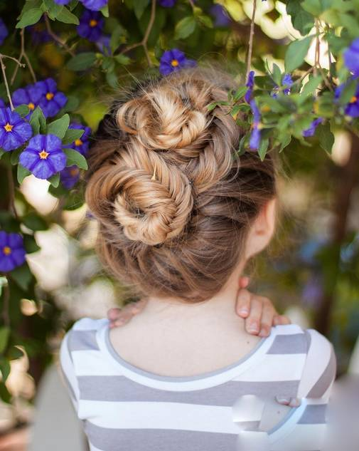
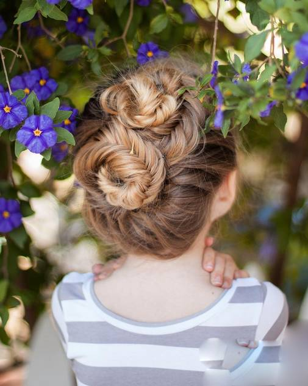

导读：许多小女孩的梦想都是：“做一个小公主！”作为妈妈， 你是否也想小小地实现一下宝贝的愿望呢？那么一起来看看怎么 绑一款儿童公主头吧！能让你的宝贝更出众哦！
小女孩时尚编发公主头发型,留着长直发的小女孩， 妈妈给小女孩编头发的时候不妨多点创意，比如这款长发公主头编发发型, 是用侧蝎子辫和荷兰辫两种编发方法编织而成的，看起来非常的美腻精致吧。
鱼尾辫,鱼尾辫编好然后盘发起来，鱼尾辫独特精致，就像花朵一般。
 

欧美风公主头，虽然头发看上去有点凌乱， 但这并不缺乏美感，戴上发饰更别致。